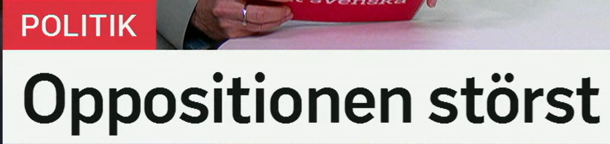
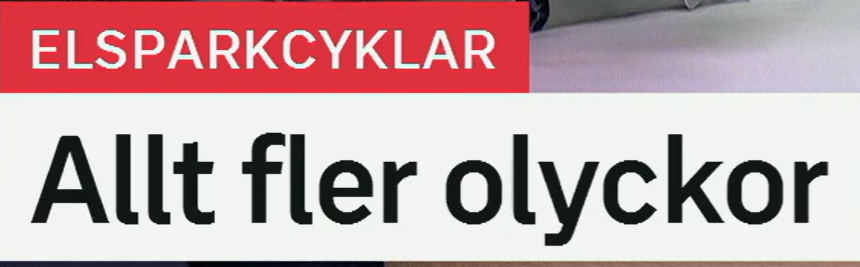
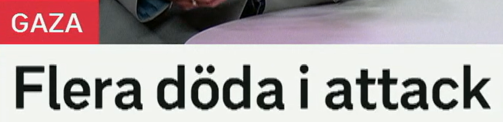
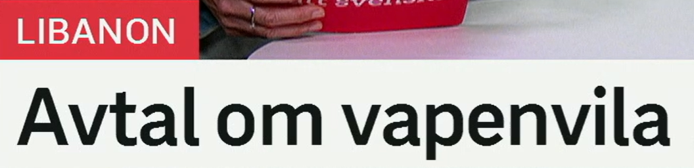
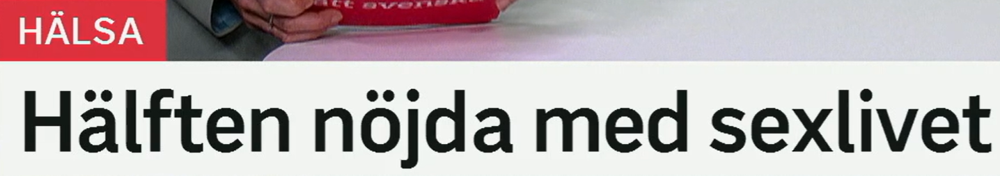

Oppositionen störst
反对派最大/支持率最高。
来自 en opposition，反对派、在野阵营。政治报道里常和 regeringen 政府、majoritet 多数派、minoritet 少数派一起出现。
相关词：oppositionsparti 反对党，oppositionsledare 反对派领袖，regeringsparti 执政党。
Oppositionen kräver en ny debatt. 反对派要求举行新的辩论。
来自 stor 大的；比较级 större，最高级 störst。在政治中可表示“规模最大/支持率最高”。
近义表达：flest röster 票数最多，starkast stöd 支持最强，leder 领先。
Partiet är störst i den nya mätningen. 该党在新民调中最大。
民调标题
X störst 省略了 är：Oppositionen är störst. 新闻标题常这样省略判断动词。

Allt fler olyckor
事故越来越多。
allt fler 表示“越来越多的”，用于可数名词。对比 allt mer，用于不可数或程度。
近义表达：fler och fler 越来越多，ett ökande antal 不断增加的数量，ökningen fortsätter 增长持续。
Allt fler använder elcykel. 越来越多人使用电动自行车。
来自 en olycka，事故、不幸事件。常见复合词：trafikolycka 交通事故，arbetsolycka 工伤事故。
近义词：incident 事件，krasch 撞车/崩溃，tillbud 险情，skada 伤害。
Antalet olyckor har ökat. 事故数量已经增加。
en elsparkcykel 电动滑板车。由 el 电 + sparkcykel 滑板车组成。
Elsparkcyklar är vanliga i stora städer. 电动滑板车在大城市很常见。
趋势标题
Allt fler X = X 越来越多。完整句可说：Det sker allt fler olyckor.

Flera döda i attack
袭击中多人死亡。
flera 表示“好几个、多个”。和 fler 不同：fler 是“更多的”，常有比较意味。
近义表达：många 许多，ett antal 若干，fler än en 不止一个。
Flera personer skadades. 多人受伤。
död 死亡的；复数 döda 可指死者。相关：dö 死亡，dödsfall 死亡病例，omkomna 遇难者。
相关词：omkomna 遇难者，dödsoffer 死亡受害者，skadade 伤者。
Flera döda rapporteras efter attacken. 袭击后报告多人死亡。
en attack 袭击、攻击。搭配：attack mot 针对……的攻击，i en attack 在一次袭击中。
近义词：angrepp 攻击，anfall 进攻，bombning 轰炸，drönarattack 无人机袭击。
Människor dödades i attacken. 有人在袭击中死亡。
伤亡报道
Flera döda i attack 省略完整动词，可扩展为：Flera personer har dödats i en attack.

Avtal om vapenvila
关于停火的协议。
ett avtal 协议、合同。高频动词：sluta avtal 达成协议，skriva under avtal 签署协议，bryta avtal 违反协议。
近义词：överenskommelse 共识/协议，uppgörelse 协议安排，kontrakt 合同。
Parterna har nått ett avtal. 各方已经达成协议。
avtal om X = 关于 X 的协议。类似：beslut om 关于……的决定，möte om 关于……的会议。
De förhandlar om ett nytt avtal. 他们就新协议进行谈判。
vapen 武器 + vila 休息，合起来是停火。高频搭配：tillfällig vapenvila 临时停火，permanent vapenvila 永久停火。
相关词：eldupphör 停火，fredsavtal 和平协议，förhandlingar 谈判，fredssamtal 和谈。
Vapenvilan börjar vid midnatt. 停火从午夜开始。
外交协议标题
Avtal om X 是新闻高频结构。完整句可说：Parterna har nått ett avtal om vapenvila.

Hälften nöjda med sexlivet
半数人对性生活满意。
hälften 表示“一半、半数”。常用搭配：hälften av ……的一半，nästan hälften 近一半。
近义表达：50 procent 50%，varannan 每两个中的一个，en av två 二分之一。
Hälften av deltagarna var kvinnor. 参与者中一半是女性。
nöjd 满意的；复数/定形 nöjda。固定搭配：vara nöjd med något 对某事满意。
近义词：tillfreds med 满足于，belåten med 满意于。反义：missnöjd med 不满意。
Många är nöjda med vården. 许多人对医疗服务满意。
来自 ett sexliv 性生活；定形 sexlivet = 性生活这个方面。健康报道中常和 relation 关系、hälsa 健康、välmående 幸福感一起出现。
Studien handlar om hälsa och relationer. 研究涉及健康和关系。
满意度标题
Hälften nöjda med X 省略 är：Hälften är nöjda med X. 可用于调查结果标题。
复习表：重点词 + 近义词 + 高频用法
| 关键词 | 近义/相关词 | 高频搭配 |
|---|---|---|
| opposition | oppositionsparti, oppositionen, regeringsparti | oppositionen störst, oppositionen kräver, starkt stöd |
| allt fler | fler och fler, ökande antal, ökningen fortsätter | allt fler olyckor, allt fler unga, allt fler använder |
| olycka | incident, krasch, tillbud, skada | trafikolycka, olyckor ökar, skadas i olycka |
| attack | angrepp, anfall, bombning, drönarattack | döda i attack, attack mot, flera attacker |
| vapenvila | eldupphör, fredsavtal, fredssamtal, förhandlingar | avtal om vapenvila, tillfällig vapenvila |
| nöjd med | tillfreds med, belåten med, missnöjd med | nöjd med livet, nöjd med vården, nöjd med resultatet |
练习 1
把“反对派在民调中领先”译成瑞典语。提示：Oppositionen leder i mätningen.
练习 2
用 allt fler 写“越来越多事故发生”。提示：Allt fler olyckor sker.
练习 3
把“各方达成停火协议”译成瑞典语。提示：Parterna har nått ett avtal om vapenvila.
练习 4
说“半数人对结果满意”。提示：Hälften är nöjda med resultatet.